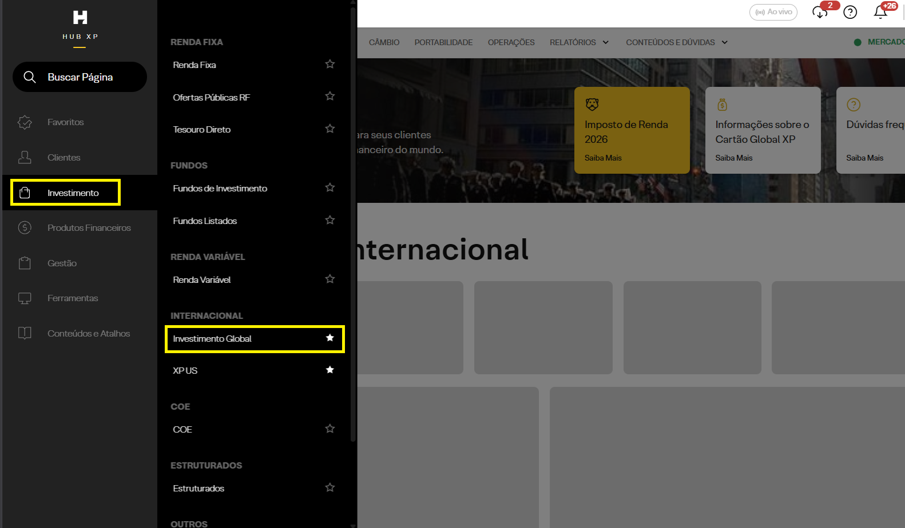
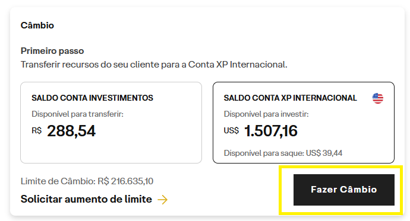
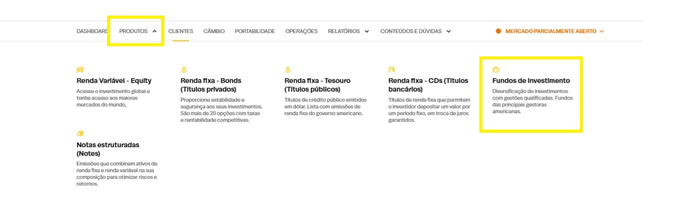

1
Entrar no HUB
Localize a frente internacional dentro do menu de investimentos e reconheça as abas operacionais disponíveis.
Mapa rápido da jornada operacional do assessor para navegar pelo HUB, localizar o cliente, conferir dados da conta global, conduzir o câmbio e acessar a prateleira de produtos internacionais.
Dentro do HUB Internacional, o assessor transita por quatro frentes complementares: navegação inicial, consulta do cliente, execução do câmbio e acesso à prateleira de produtos. O ganho vem de encadear essas etapas sem perder contexto da conta do cliente.
Localize a frente internacional dentro do menu de investimentos e reconheça as abas operacionais disponíveis.
Abra a tela de clientes, insira o código e consulte status da conta, dados cadastrais e itens regulatórios.
Entre na área de câmbio, valide a conta de origem, o valor, o spread e o total estimado a receber.
Com recursos já disponíveis na conta global, avance para a prateleira internacional para enviar push de funds, equities, bonds e outras estruturas.
A entrada no ambiente internacional combina o menu lateral do HUB com uma barra horizontal de navegação. O assessor precisa reconhecer esses dois níveis para ir rápido ao destino certo.
No menu lateral, o caminho operacional destacado é Investimento > Internacional > Investimento Global. Esse é o atalho de entrada para a frente em que o assessor vai trabalhar abertura, câmbio e produtos da conta global.
Depois de entrar, a navegação superior organiza o ambiente por tema. É nessa régua horizontal que o Assessor transita entre dashboard, produtos, clientes, câmbio, portabilidade, operações, relatórios e conteúdos de apoio.


A tela de cliente concentra os dados que normalmente destravam a próxima ação: status da conta XP International, envio de push, abertura de conta, dados cadastrais, W8, suitability, TOD e a visão consolidada de saldos e posições das carteiras local e offshore.
Na aba Clientes, o Assessor consegue identificar rapidamente quando o cliente ainda não tem a conta global aberta. É por essa mesma frente que ele pode enviar o push de abertura de conta para que o cliente conclua o processo.
Como alternativa, o cliente também pode abrir diretamente pelo app da XP, acessando a área de Conta Global. Isso ajuda quando o Assessor prefere orientar a jornada pelo aplicativo em vez de disparar o push a partir do HUB.
A própria tela de abertura mostra o andamento do processo, desde o envio do push até a confirmação de dados, aceite de termos, análise e abertura concluída. Essa leitura é útil para saber se já faz sentido avançar para câmbio ou se o cliente ainda precisa concluir a etapa de onboarding.

Quando a conta global já está ativa, a mesma aba de Clientes passa a funcionar como uma visão operacional concentrada. Ali é possível confirmar se o cliente carregado está correto, consultar identificadores relevantes e checar informações que impactam o atendimento.
Além dos dados cadastrais, essa etapa também permite ler os saldos disponíveis e a composição das carteiras local e offshore, com posições e alocações já montadas. Essa leitura ajuda o Assessor a entender o ponto de partida do cliente antes de seguir para câmbio ou produtos.
É nessa etapa que também faz sentido revisar o TOD quando a conversa exigir alinhamento patrimonial e sucessório.


Depois da validação cadastral, a jornada normalmente migra para a conversão de recursos. O HUB separa bem o caminho de acesso, a ação de iniciar o câmbio e a boleta final de envio.
A área de câmbio é onde o assessor transforma o saldo em reais no funding da conta internacional. O fluxo é simples, a liquidação é em D0 e exige conferência de origem dos recursos e limites antes do envio.
Na barra superior do HUB Internacional, acesse a aba de câmbio para abrir a frente operacional correta.
Confira o saldo disponível na conta de investimentos ou digital e o saldo já existente na conta global.
Na tela do cliente em câmbio, o botão Fazer Câmbio leva o assessor para a boleta operacional.
Como o câmbio é em D0, revise conta de origem, valor, spread e limite antes de confirmar a remessa para a conta investimento global.
O fluxo começa na régua superior do HUB Internacional. O primeiro movimento do Assessor é clicar em Câmbio para entrar na frente operacional correta. Essa etapa concentra a busca do cliente e a passagem para a boleta.
Dentro dessa área, o próximo passo é localizar o cliente pelo código. Depois de abrir o cadastro correto, o HUB exibe os saldos relevantes para a operação e habilita a continuidade do processo.
Com o cliente carregado, o Assessor deve confirmar se o cliente exibido está correto, verificar o saldo disponível e então clicar em Fazer Câmbio, que é a ação que leva diretamente para a boleta de envio.


Ao clicar em Fazer Câmbio, o fluxo avança para a boleta. É nela que o Assessor escolhe se o recurso em reais sai da Conta Investimento ou da Conta Digital, informa o valor da operação e define o spread aplicável dentro da alçada disponível.
O painel lateral da boleta consolida a conferência final da operação: conta de origem, conta destino, cotação do cliente, impostos, comissão estimada e total aproximado a receber. Como a liquidação é em D0, essa revisão precisa ser objetiva e segura.

| Campo | O que validar |
|---|---|
| Conta de origem | Escolher entre Conta Investimento ou Conta Digital, conforme onde o saldo em reais está disponível. |
| Valor do câmbio | Confirmar o montante em reais que será convertido. |
| Spread | Aplicar dentro da faixa ou alçada permitida e em linha com a proposta combinada. |
| Resumo da cotação | Checar IOF, comissão estimada, VET e total aproximado a receber. |
Com recursos já disponíveis na conta global, o HUB passa a ser o ponto de distribuição das soluções internacionais. Aqui o Assessor navega pela prateleira de produtos e seleciona a classe de ativo mais adequada para o push ao cliente.
Na frente de Produtos, o Assessor encontra os acessos para fundos de investimento, renda variável/equity, bonds, tesouro, CDs e notas estruturadas. Essa tela ajuda a transformar o dinheiro convertido em carteira efetivamente alocada.
O objetivo dessa etapa é sair da conta já com o produto certo mapeado e com o push preparado para o cliente. Depois do envio, o monitoramento operacional segue em uma frente própria, na Central de Operações.

Porta de entrada recorrente para diversificação internacional assistida, com gestão profissional e composição pronta.
Acesso ao mercado acionário internacional dentro da mesma jornada operacional, útil para alocação temática, setorial ou geográfica.
Bonds, tesouro, CDs e notas estruturadas ampliam a prateleira e ajudam a compor a carteira global com objetivos específicos.
Depois de executar a operação, o Assessor acompanha o andamento das solicitações na Central de Operações. Esse é o ponto de controle para saber se o câmbio avançou e se os pushs de produtos internacionais foram aceitos.
Na aba Operações, a Central de Operações organiza o monitoramento em duas frentes principais. Em Depósitos e Saques, o Assessor acompanha as movimentações ligadas ao câmbio. Em Ativos Internacionais, acompanha os pushs de produtos enviados ao cliente.
A tela também permite acompanhar o status das solicitações ao longo da jornada, o que ajuda a identificar rapidamente se a ordem está em processamento, pendente de cliente ou já aceita.